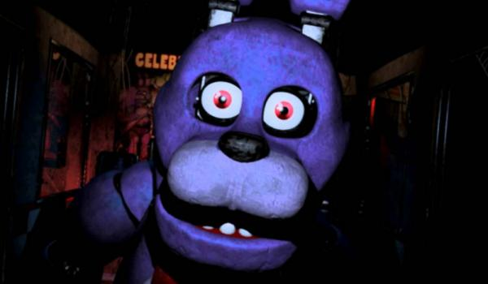

Bonnie

Bonnie
Bonnie jest materiałowym, lawendowym królikiem o malinowych oczach. W okolicach brzuszka i pyszczka ciało jest trochę jaśniejsze od całej reszty. Ma artykułowane uszy, co pozwala na zginanie ich do przodu. Tak jak większość starych animatroników, wydaje się, że nie ma górnego rzędu zębów.